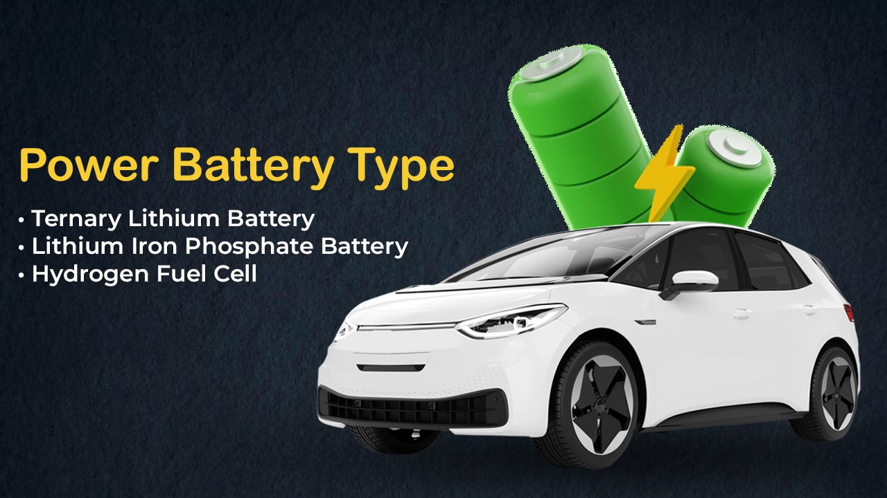
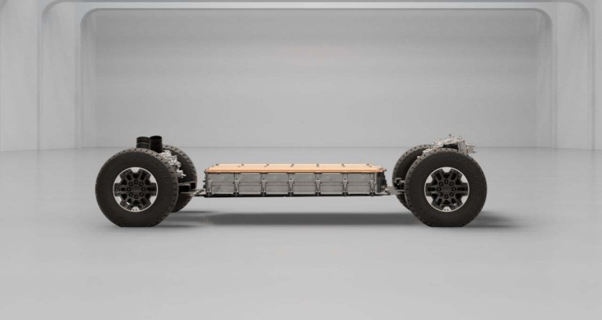

The declining cost of electric vehicle (EV) batteries is boosting the global supply of EVs and the demand for batteries. Since 2010, the average price of lithium-ion EV battery packs has dropped from USD 1,200/kWh to USD 132/kWh. Typically, each EV battery pack consists of many interconnected modules, housing dozens to hundreds of rechargeable lithium-ion batteries. These batteries usually account for about 77 percent of the total cost of a battery pack, around USD 101/kWh.
The percentage of each component of the electric vehicle battery to the total cost of the battery pack:
- Cathode: 51 percent
- Manufacturing and depreciation: 24 percent
- Anode: 12 percent
- Separator: 7 percent
- Electrolyte: 4 percent
- Other materials: 3 percent
Why is the cathode so expensive?
The cathode is the battery's positive electrode. During discharge, electrons and positively charged lithium ions flow to the cathode. The cathode stores them until recharging, influencing battery performance, range, and thermal safety. Consequently, it's a crucial component of electric vehicles. Cathodes typically comprise various refined metals, such as lithium and nickel, based on battery chemistry. Commonly used cathodic components in modern times include:
- Lithium iron phosphate (LFP)
- Lithium nickel manganese cobalt (NMC)
- Lithium nickel cobalt aluminum oxide (NCA)
There's high demand for battery metals in the cathode, leading to efforts by Tesla and other automakers to secure supply. The metal materials in the cathode and other battery parts represent about 40% of the total cost. Components aside from the cathode contribute to 49% of the battery's cost. The battery manufacturing process involves electrode production, assembly, and completion, accounting for 24% of the total cost. The anode, crucial to the battery, constitutes 12% of the total cost and approximately a quarter of the cathode. Anodes in lithium-ion batteries typically comprise natural or synthetic graphite, often more economical than other metal materials.
The Heart of New Energy Vehicles - Power Batteries
The power battery is crucial for new energy vehicles, representing 30-40% of the total cost and setting them apart from traditional fuel vehicles. Unlike traditional vehicles relying on engines, new energy vehicles depend on power batteries. Concerns about their future stem from safety incidents and reduced winter range. These doubts revolve around four key factors: vehicle range, battery safety, charging convenience, and battery recycling.
Structural Composition of Power Batteries
The power battery consists of multiple battery units, a CSC data acquisition system, a BMU, a high-voltage distribution unit, and a cooling system.
Automotive Power Battery Monomer
The battery monomer, the battery's smallest unit, comprises a positive electrode, a negative electrode, and an organic electrolyte. Multiple battery monomers in parallel form the battery module. Connecting several battery packs in series creates a battery unit, and further series connections form power battery components. Currently, ternary lithium batteries and lithium iron phosphate batteries dominate the market's power battery capacity, so these two types deserve our attention.

Power Battery Type - Ternary Lithium Battery
The ternary polymer lithium battery, also known as the ternary lithium battery, utilizes nickel-cobalt-manganese lithium (Li(NiCoMn)O2) or lithium nickel-cobalt-aluminate as its cathode material. This composite cathode material comprises nickel, cobalt, and manganese salts, with the proportion of nickel-cobalt-manganese adjustable based on specific requirements.
A battery using ternary material as the positive electrode offers greater safety compared to a lithium cobaltate battery. The ternary lithium battery, combining high energy density and high voltage, finds extensive application in mobile devices, electronic equipment, electric tools, as well as hybrid and electric vehicles.
Many car companies prefer ternary lithium batteries due to their higher energy density, which results in greater unit volume or weight for the power battery.
In general, higher battery energy density leads to increased endurance for pure electric vehicles, making ternary lithium batteries appealing for long-range pursuits by new energy vehicle companies. Additionally, ternary lithium batteries demonstrate advantages in low-temperature resistance, experiencing less winter power attenuation compared to other battery types under similar cold conditions, making them more suitable for colder regions.
However, poor stability is a drawback of ternary lithium batteries, as they can become uncontrollable and pose a high risk of spontaneous combustion when temperatures reach 250-350℃ during fast charging. Consequently, strict heat dissipation requirements and elevated technical demands for the BMS battery management system are necessary for ternary lithium batteries.
Power Battery Type - Lithium Iron Phosphate Battery
The lithium iron phosphate battery utilizes lithium iron phosphate (LiFePO4) as the positive electrode material and carbon as the negative material, with a monomer-rated voltage of 3.2V. Its primary advantage lies in high safety, with exceptional thermal stability and a low risk of spontaneous combustion due to a thermal runaway temperature generally exceeding 500 degrees. Additionally, these batteries offer a relatively long cycle life, lasting over 3,500 charge and discharge cycles, equivalent to approximately 10 years, and boast competitive pricing.

Lithium iron phosphate batteries exhibit high operating voltage, energy density, cycle life, safety performance, low self-discharge rate, and no memory effect. However, their energy density, averaging 130-140Wh/kg, falls short of ternary lithium batteries' average of 160Wh/kg, making it challenging to compete in endurance, thus explaining the limited use of lithium iron phosphate in pure electric vehicles.
Power Battery Type - Hydrogen Fuel Cell
Compared to batteries, hydrogen fuel cells represent a very specialized "zero-emission" clean energy source, converting hydrogen and oxygen directly into electrical power through the reverse reaction of electrolyzed water. Hydrogen fuel cells not only offer high energy conversion efficiency but also operate pollution-free and noise-free, making them a key future direction for the power battery industry. Hyundai Motor India Ltd. "2025 strategy" involves expanding the sales of pure electric vehicles and incorporating hydrogen-fueled electric vehicles into its sales plan, while companies like Toyota and Honda actively promote hydrogen fuel cell technology.
However, current challenges persist for hydrogen-fueled electric vehicles, primarily due to the inconvenience of hydrogen storage and high costs. The future trajectory for power batteries entails increasing energy density, faster charging speeds, enhanced safety, and reduced costs.